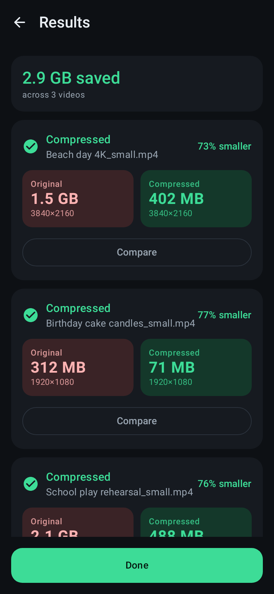
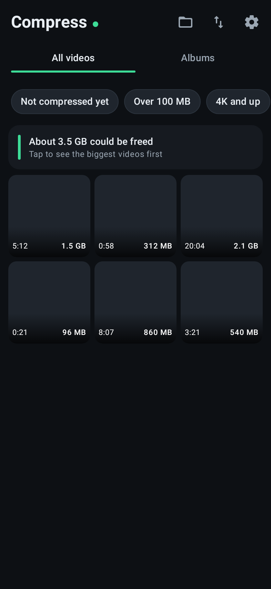
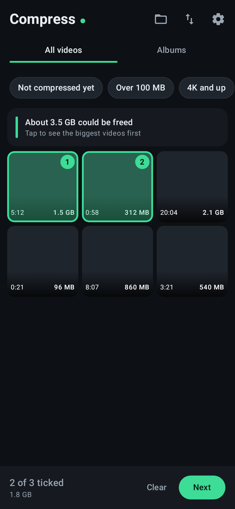
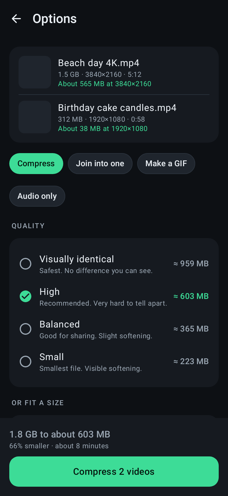
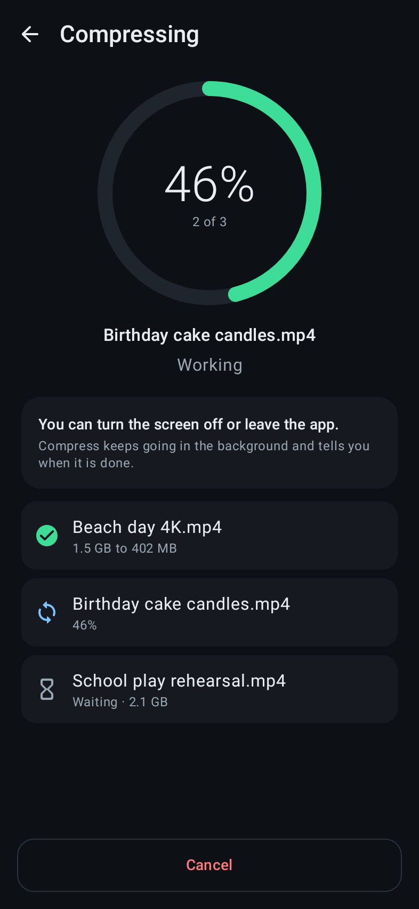
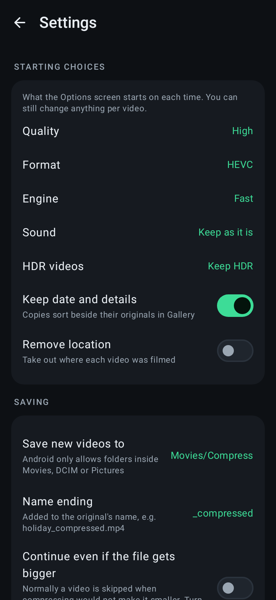
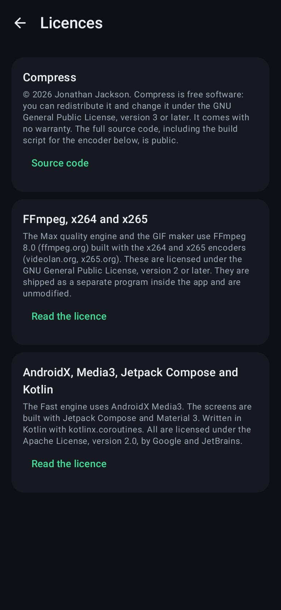

Smaller videos, the same picture
Phone videos are far bigger than they need to be. Compress shrinks them without a difference you can see, at the full picture size unless you choose a smaller one. Start it, turn the screen off, and it tells you when it is done.
The work is done on your phone, so your videos are never uploaded, and your originals are kept unless you say otherwise.
Download for AndroidHow to install
- Version 1.1
- Android 10 or later, 64-bit
- 15 MB
Free, with nothing to unlock. No adverts, no account with the developer, no tracking. Compare or read the release notes.
Chrome may say the file might be harmful. It shows this for app files that do not come from Google Play. Choose Download anyway.

- No subscriptionEvery feature is in the free app.
- No advertsNone in the app and none on this site.
- No uploadsVideos are shrunk on your phone.
- Open sourceThe code is published under the GPL.
A look inside
These are the real screens, drawn from the app's own code with made-up videos. Swipe or scroll sideways to see them all.






How it works
There is nothing to buy and no account to make. Compress uses your phone's video chip, or its own encoders for the smallest files.
Tick your videos
From your gallery, or share them to Compress from another app.
Choose how small
A quality level, or a size to fit, and the format. Compress shows the size to expect first.
Leave it
Turn the screen off or close the app. Compress tells you when it is done and keeps your originals.
Everything is in, and all of it is free
Nothing below is held back for a paid tier, because there is no paid tier.
Smaller files
- Four quality levels
- Visually identical, High, Balanced and Small, each showing the size to expect.
- Fit a size
- WhatsApp, Discord, Gmail or a size of your own, with a second try if the first lands over.
- The full picture
- Original resolution kept by default, or anything from 2160p down to 240p.
- Three formats
- HEVC, H.264 and, where the phone can write it, AV1.
Engines
- Two engines
- Fast, on the phone's video chip, and Max quality, using the x264 and x265 encoders.
- Screen off, app closed
- It keeps going in the background and tells you when it is done.
- Skips what will not shrink
- A video that would get bigger is left alone.
Editing
- Trim, crop and turn
- Cut the ends off, crop the picture, rotate or flip it, and change the speed.
- Join, GIF and audio
- Join clips into one, make a GIF, or keep just the sound.
- Dates, places and HDR
- Keep the date and details, take the location out, keep or convert HDR.
Your originals
- Compare
- Original and compressed side by side.
- Kept unless you say
- Originals stay put, or go to a bin you can empty later.
- Automation
- Compress new videos for you, overnight if you like.
Your videos are your business
Nothing is uploaded
Both engines run on your phone.
No servers
Compress has no accounts and no servers. The developer collects nothing.
No ads, no tracking
There is no advertising, analytics or tracking, in the app or on this site.
Installing and updating
Compress is not on Google Play, so your phone asks a couple of extra questions the first time.
Download the app file
Tap Download on your phone. The file is called Compress.apk and is about 15 MB. If Chrome says the file might be harmful, choose Download anyway.
Allow the install
Open the file. The first time, Android asks you to allow your browser to install apps. Allow it, go back and tap Install. If Google Play Protect steps in, choose More details, then Install anyway.
Updating later
Compress tells you when a newer version is out. Install the new file over the old one and everything you have saved is kept.
Version 1.1, released 16 November 2026. See the release notes, or check your download.
Questions
Is Compress really free?
Yes. There is no paid version, no subscription and no adverts, and nothing in the app is locked. See the comparison.
Is Compress on Google Play?
No. Compress is a personal project and is downloaded from this site as an Android app file. It needs Android 10 or later on a 64-bit phone, which covers almost every phone sold in recent years.
Are my videos uploaded anywhere?
No. Compress reads and writes videos on your phone, and it has no servers. It uses the internet for one thing only: to check for a newer version of itself. The detail is in the privacy policy.
Will I see a difference?
On Visually identical and High you should not, at normal viewing. Compressing always discards something, and the lower settings trade more of it for a smaller file, so each setting says plainly what to expect. Use Compare to check a result for yourself before you delete anything.
How much smaller will a video be?
It depends on the video and the setting. On High, Compress aims a one-minute 1080p video at about 39 MB, where a phone usually records that minute at 100 MB or more. A video that is already tightly packed, such as one downloaded from a website, may not shrink at all. Compress says so and skips it.
Will my original be changed?
No. Compress saves a new copy, in Movies/Compress unless you choose another folder, and leaves the original alone. If you turn on Replace originals, you are asked after each batch to move the originals to Android's bin, where they stay for 30 days.
Does it really work with the screen off?
Yes. Compress runs as a background task with a notification that shows progress, so you can turn the screen off or use another app. Recent versions of Android limit how long an app may do this in a day, to about six hours. If that limit is reached, Compress stops tidily and carries on when you next open it.
What is the difference between Fast and Max quality?
Fast hands the work to the phone's video chip, which is quick and stays cool. Max quality does the work in software with the x264 and x265 encoders. It can squeeze a file smaller for the same picture, but it takes many times longer and warms the phone, so it is best left running on charge.
Will the copy play on other devices?
A copy in HEVC plays on most phones, tablets, televisions and computers made since about 2017. If it has to play on something older, choose H.264 instead. AV1 files are the smallest and need a recent device or browser.
How do I update Compress?
Compress tells you when it opens if a newer version is out. Download it from this site and install it over the one you have. Your settings and your queue are kept.
Free up space without losing the picture
Free, with no adverts and nothing to unlock. Made by the developer of several other free Android apps: see them all.